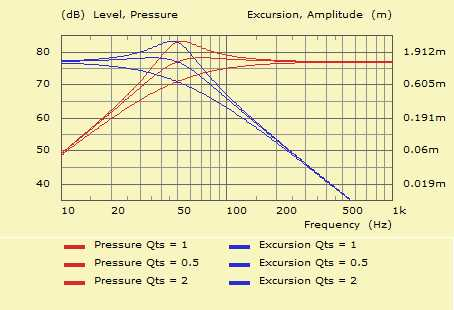

The total quality factor, Qts is defined in the electro-dynamic standard model of a loudspeaker transducer.

Pressure and ExcursionThe higher the value of Qts the better the transducer goes into resonance at its fundamental resonance frequency, fs.
Qts actually measures the ratio between the passband-level and the level at resonance. A value of approx Qts > 1 means an amplification of the sound pressure. However, at the same time the excursion goes up, too.